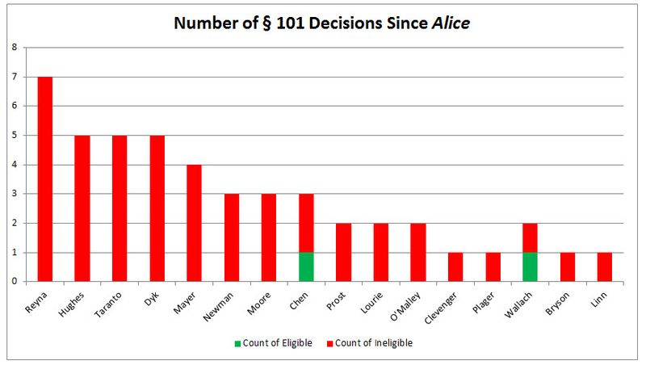
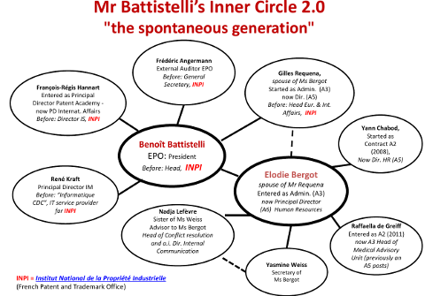

07.16.15
Posted in Europe, Patents at 8:29 am by Dr. Roy Schestowitz
Summary: SUEPO (staff union of EPO) has just removed a post about Battistelli and his inner circle; we try to find out if union members or staff got threatened
LAST week SUEPO published some text and uploaded this PDF, which led us to writing this post.
Days later the PDF and the text both disappeared (it’s still not being reinstated and the PDF needed to be manually removed), so we have spent some time trying to find out what had happened. It’s almost certainly not accidental given the circumstances. One person told us that “the decision what is flagged public and what not is taken mostly by admins, and these are not members of the (political) SUEPO core team.”
Remember that SUEPO represents a great proportion of the EPO staff and also that the EPO engaged in censorship against SUEPO. There’s substantiate ground for fear. Battistelli’s inner circle is not speculative; this is just a list of names, their positions, and their family or professional ties. No defamation there, that’s for sure. No privacy violations, either.
We were not alone in wondering what had happened; there are already discussions about this online and offline (we may elaborate on this another day because some of the discussion is encrypted). Nobody seems to know for sure what is going on.
“No defamation there, that’s for sure. No privacy violations, either.”Does the EPO now induce self-censorship? First the EPO censored (deleted) E-mails, now it's censoring (blocking) entire Web sites such as Techrights. The People’s Republic of EPO might be a suitable new title for EPOnia, which views itself as independent from any country’s laws. Here is a new article about the EPO’s practice of censorship, composed and published yesterday morning. “EPO staff can still read TechRights at home or on mobile devices,” of course, “a fact that makes this attempt at censorship absolutely ridiculous. But it should also have access from its desktop computers at work just in case anyone finds links to prior art there.
“The EPO leadership has just scored an own goal: by blocking access to TechRights, it has now raised the profile of that blog.”
Dr. Glyn Moody, a journalist who covers issues including patents, calls it EPO “meltdown” (he wrote that 3 times over the past 24 hours). SUEPO, in the mean time, publishes another PDF, this time regarding the “120th Session of the ILO-AT” (it is a long 12-page paper).
As a side note, and it would be irresponsible to suggest that it is connected to the EPO’s actions (we have no such evidence except circumstantial), almost exactly on the same day (or the day after) the censorship was reported we got strongarmed by ICANN/ENOM to update records for the domain, as if someone complained that it was out of date. I received an authentic E-mail titled “IMPORTANT: Immediate Response Required – whois problem report: : techrights.org” on the same morning I wrote about the EPO’s censorship of techrights.org. ICANN/ENOM complaints are one way (among others) to induce domain-wide/universal blocking or expose one’s home address. I have been wrestling with this for 3 days now. It’s not as stressful as dealing with DDOS attacks, but it sure is a nuisance. █
Permalink
 Send this to a friend
Send this to a friend
07.14.15
Posted in America, Law, Patents at 2:31 pm by Dr. Roy Schestowitz
In Lieu of Decades of Bad Practice

Credit: Bilski Blog
Summary: The so-called ‘AliceStorm’ is eliminating software patents (and other abstract patents) at an alarming (to patent lawyers) rate
LAST WEEK we wrote about Michelle Lee's remarks on patent law, conjoined with the report about the Alice case beating Microsoft's patent troll, Intellectual Ventures. Lee’s remarks were important because she is now the leading face of the USPTO (no matter her job title) and Alice is killing software patents very fast, impeding Microsoft’s attacks on Free software in the process. It was only four days ago that we last cited a new example where Alice slaughtered software patents, paving the way (by citation or argument/strategy) for future legal cases where software patents are at stake. This is one of the most fantastic developments that Techrights has seen in nearly a decade and if Groklaw was still active, it too would be jubilant (it partly celebrated the Alice ruling in News Picks, coming back to life after less than a year of total silence).
“Lee is finally recognising that everything has changed and therefore the USPTO needs somewhat of an examination overhaul, for courts almost always disagree on software patents granted by the USPTO.”Michelle Lee now claims that the USPTO needs more Section 101 guidance, based on this patent lawyers’ site. Lee is finally recognising that everything has changed and therefore the USPTO needs somewhat of an examination overhaul, for courts almost always disagree on software patents granted by the USPTO. Just look at the statistics.
According to Patent Buddy, this new ruling [PDF] is yet another victory. “Another case where application of Alice/101 to kill patents has jumped the fence from business methods to software,” to quote Patent Buddy, who added: “We are seeing 101/Alice rejections for everything from MRI devices to adhesives!” According to another new find from Patent Buddy, “US Pat. 6728877 and 7346766 Killed with 101/Alice in Summary Judgment in Lawsuit Against Lenovo by Tranxition in Oregon Dist. Ct.”
This isn’t being overlooked, except by patent lawyers who probably hope that nobody will pay attention. They cherry-pick the few cases where software patents somehow survive. Here is a software patents’ booster whining about this. He wrote: “Deals are still being done in the software patent world, but patent valuation is significantly less than even just a few years ago.”
It’s hardly shocking.
“The Alice/101 Kill Rate Is Accelerating,” Patent Buddy added, linking to a “MUST READ From Bilski Blog” where Robert R. Sachs coins (or advertises) the word/hashtag “AliceStorm”. To quote Sachs: “In just the first ten days of July, there have been ten decisions on patent eligibility—more decisions in first ten days of any month since Alice was decided last year. At this pace, we could see some twenty to thirty decisions this month. #AliceStorm is accelerating.”
It sure looks like even some of the most respected legal blogs (like Bilski Blog in this case) recognise that software patents are weakened by Alice orders of magnitude more often then they were weakened (or invalidated) by the famous Bilski case (it did happen albeit very infrequently). █
Permalink
Send this to a friend
07.11.15
Posted in Europe, Patents at 4:17 pm by Dr. Roy Schestowitz
Free speech? That would be too scientific for ringleader Battistelli.
Summary: The management of the EPO — not to be confused with scientists such as patent examiners — shows utter disregard for Free speech and chooses to forcibly silence its opposition rather than counter its message (refutation may not be possible)
THE INFAMOUS RING of Battistelli is digging itself deeper into the grave. We have already reported confirmed censorship by the EPO [1, 2]. This kind of fruitless censorship may not be news anymore; however, we have just found out that the EPO blacklisted our Web site a couple of days ago. They have begun domain-based censorship, as if they are the US Navy trying to keep troops misinformed and brainwashed. If they are willing to go as far as blocking the whole site and we also know that they put the site under very extensive surveillance, then who knows, maybe they are indirectly behind all those DDOS attacks too. The Hacking Team leaks show that a lot of very powerful institutions shamelessly engage in cracking and DDOS attacks by proxy, ‘as a service’ so to speak. We have hardly had such problems until we started covering the EPO scandals (we hadn’t had DDOS attacks against us since around 2009, so that’s about half a decade DDOS-free until around the very moment we wrote exclusively about the scandals last summer). Our EPO wiki has the timeline.
A source told us that “since yesterday” (the day before yesterday) Techrights is not all all accessible from the EPO. There is more about it in the latest comments on this article from one month ago. “By the way,” writes one person, “the website techrights.org has been blacklisted today, for access from inside the EPO” (this was said 2 days ago).
“Well, making the site inaccessible from work isn’t too wise a plan because of the Streisand effect (people just get even more curious about what’s being hidden).”One person responds: “Only now? Can’t imagine that anyone has dared to try recently. Self-censorship is a powerful tool. I don’t even look at ipkat from the EPO! You don’t want to be caught in possession of any anti-BB thoughts.”
Another person writes: “I can confirm that Techrights is not accessible anymore from within the Office.
“Disgusting.”
Well, making the site inaccessible from work isn’t too wise a plan because of the Streisand effect (people just get even more curious about what’s being hidden). Some parts of the US government (e.g. US Navy) tried this against Wikileaks, but people can still access the ‘naughty’ site from home (after work). The only way to prevent access to the site universally is DDOS attacks and/or cracking.
This is basically an admission of defeat; the EPO’s management is unable to counter the facts or sue for defamation (because the statements are correct and are even supported by European courts), so they are just trying to gag the messengers. China does it with the infamous DDOS ‘cannons’ (see press reports the recent DDOS attacks against GitHub, which was used to host mirrors of stories that the Great Firewall of China cannot ever effectively suppress). The EPO is trying a desperate and counter-productive censorship strategy as well. It’s going to backfire; people cannot respect an employer who actively censors and spies on employees, especially if it’s done in order to prevent the employees from finding out the truth about the employer. To make matters worse, Battistelli et al. attack journalists, not just staff. It’s a form of shameless sabotage.
I have repeatedly asked Amazon where to serve legal papers to and Amazon refuses to even answer. They guard DDOS and have officially taken a “do not reply” approach after their machines had been attacking my site and caused a lot of damage (recent attacks on my sites caused even database corruption several times recently, with repairs taking hours, let aside disruption to service).
The EPO has been targeting Techrights in a variety of confirmed ways (censorship, surveillance, and maybe more); the only attack vector that’s hard to concretely prove is DDOS, but we are going to pursue this pretty soon. SUEPO already initiated an investigation after it had come under cyber attacks. If anyone knows anything about it and has some documents that can prove it, please make an effort to anonymously send it to us. Transmission using Tor and an empty E-mail account can do the trick. We have never let down or betrayed a source (in our decade-old history with many whistleblowers). Potential sources and also the principal target audience are sadly unable to access this site from work anymore. █
Permalink
Send this to a friend
07.10.15
Posted in Europe, Patents at 7:20 am by Dr. Roy Schestowitz

Summary: Rather than combat perception of corruption in appointments around Battistelli, the EPO does more to reinforce this perception
SUEPO has just published [PDF] “Mr Battistelli’s Inner Circle 2.0 – “the spontaneous generation” (09/07/2015)” and as the poster puts it (evident from the graph), “Mr Battistelli’s Inner Circle has evolved since 2014.”
Remember that all of these people receive astronomical (but undisclosed) salaries, sourced from European taxpayers.
Notice not only the professional relationships (bringing one’s old mates to protect oneself) but also the incestuous relationships. It’s like the Binay family (many people of the same family promoted to positions of power through corruption and money laundering). It’s akin to dynasty or royalty/monarchy. And this is the supposedly democratic European Union we’re talking about! It’s not about what you know but about who you know and who’s in your family. That is seemingly the promotion and hiring yardstick at today’s EPO. It’s not just "Balkan standards" but the standards of a third world country. █
Permalink
Send this to a friend
07.08.15
Posted in Apple, Europe, Patents at 7:19 am by Dr. Roy Schestowitz
Who’s copying who?
Summary: Europe is being drained by the patent industry (lawyers, judges, etc.) while the US gradually takes on the problem
“So Software isn’t Patentable in the EU but the EPO is ignoring the Law?”
That’s a comment made the other day by “AntiSoftwarePat” over at Twitter. Well, we have already shown many other instances where the EPO ignores the law — knowingly too — including the extension of patent scope (in order to artificially elevate patents count).
The Unitary Patent will take expansion of patent scope even further, transcending borders. “UK Unitary Patent ratification before Brexit referendum, Mr Cameron is taking risks by giving EU super patent powers,” wrote the FFII’s President regarding this new article about UK-IPO. “In a statement sent to Out-Law.com,” said the author, “the IPO ruled out ratification of the Agreement this year but said that it intends to complete the “domestic preparations” for ratification ahead of the UK referendum on whether the country should remain in the EU, which is scheduled for some time in 2017.”
So they are jumping the gun. The public isn’t even taken into account.
“Hey, let’s patent life,” some folks may think (they can make a lot of money from that). According to this article from a London-based blog of lawyers, “Life sciences come to life again, this time in Berlin”. To quote: “Arrangements are now being made for the training of judges, the provision of court facilities and the projecting of existing patenting and dispute resolution techniques on to a fresh canvas. This is a scenario in which the accumulated experience, knowledge and wisdom of the life science sector cannot be relied upon in the absence of rigorous double-checking against a new framework for patenting, new litigation rules and — this is going to hurt the most — a set of complex transitional provisions.”
This shows that Europe is rushing (even fast-tracking) these expansions without public consent. While the US is narrowing down patent scope, Europe seems to be expanding patent scope.
A new article from the US (CBS) asks: “What would ‘real’ patent reform look like?”
The author correctly points out that “last year, the US Supreme Court issued a number of patent-related decisions that drew modest limits around both the process and substance of newly created categories of patents, including for software and business methods. Courts and the Patent Office became more aggressive about rejecting or overturning applications that should never have been granted. As a result, the overheated market for low-quality patents collapsed.”
The whole patent system in its current form is so utterly corrupt, biased and inherently protectionist (that’s just its goal, not publication). Too few people are willing to say that. Watch what Apple is patenting right now [1, 2]. It’s computer vision, i.e. software patents, on selfies! Will Europe go down the same abyss? hopefully not. European citizens need to educate themselves about what today’s patent system really is and who it benefits. █
Permalink
Send this to a friend
07.07.15
Posted in America, Microsoft, Patents at 6:57 am by Dr. Roy Schestowitz
Summary: Latest developments surrounding software patents and patent trolls in the United States
For somewhat of a change, today we have some good news. Amid complaints about the patent system (see for example “Patent abuse hurts in Lansing, nation”) the USPTO‘s Michelle Lee, whom we wrote about before [1, 2, 3, 4, 5], remarks on patent reform at The Center for Strategic and International Studies (CSIS) Patent Reform Forum. She said that “there are certain changes that only Congress can make via legislation. Which is why I’m pleased that patent litigation reform legislation is currently moving forward.”
“Legacy of software patents may be short-lived if this carries on.”But with or without a reform (Congress involvement), there are changes that are made at the courts. According to patent lawyers and the pro-patents circles (even lawyers’ sites), “the Federal Circuit has affirmed that Intellectual Ventures’ asserted patent claims are invalid for lacking eligible subject matter. Intellectual Ventures v. Capital One (Fed. Cir. 2015) (Patent Nos. 8,083,137, 7,603,382, and 7,260,587).”
This is Microsoft’s patent troll, which also attacks Android/Linux these days. “The Federal Circuit on Monday rejected patent licensing giant Intellectual Ventures Management LLC’s bid to overturn the invalidation of several online banking patents it asserted against Capital One Financial Corp., saying they cover abstract ideas under the standard set by the U.S. Supreme Court’s landmark Alice ruling.”
What we have here is Alice vs. Microsoft’s main troll and the ruler, surprisingly enough, is the court most friendly towards software patents (and their originator). This is pretty big news. Those who celebrate it are on a roll. “Matthew Moore argued three Federal Circuit appeals in a single week in May,” says The Recorder. “He won all three cases.” See page two of the original decision [PDF] to see Moore’s involvement in this case. These people now know how to kill software patents even in the most hostile environment (CAFC). Legacy of software patents may be short-lived if this carries on.
On the other hand, Newegg, which was hit with millions in ‘damages’ due to software patents, finds out that it is unable to appeal. As a trolls expert put it: “Online retailer Newegg has developed a reputation for taking on so-called “patent trolls,” even when that means going through lengthy litigation and unpredictable jury trials.
“The company’s last patent trial concluded in November 2013, when Newegg faced off against a patent troll called TQP Development. TQP used US Patent No. 5,412,730 to make a vast claim to basic Internet encryption technologies, saying that anyone using the common combination of SSL and the RC5 encryption algorithm was infringing. By the time of the trial with Newegg, TQP had sued more than 120 companies and earned $45 million in settlement payments.”
This comes after a 20-month delay, so it basically predates the SCOTUS ruling regarding Alice — a ruling that would have possibly helped Newegg win this case. █
Permalink
Send this to a friend
07.06.15
Posted in America, Patents at 5:00 am by Dr. Roy Schestowitz
Taking away from people’s rights to empower corporations
Summary: An overview of recent coverage about patents, demonstrative of inherent bias in the world of patent practitioners and the journalists whom they misinform
Patent propaganda is rampant and increasingly widespread in the corporate media because patents these days mostly serve large corporations. It’s means of protectionism, not for the ‘small guy’ (as the saying goes) but for any large corporation that loathes fair competition (it’s against shareholders’ interests to have competition).
Like in the Germany-Greece standoff, Japan treats people’s rights as inferior to corporations’ (as if corporations are entitled to rights), based on the Japanese corporate/globalist media (Japan Times). It may be considered extremely shocking a piece of news if it weren’t for how highly Japanese society regards corporate power. One site in Japan said that “The House of Councillors on Friday passed into law a bill to revise the patent law to allow companies to obtain patents on inventions by their employees.”
Remember that most people capable of coming up with a patent are employed by one company or another. So this is further centralisation of patent power, almost abolishing the notion of so-called ‘independent inventors’.
Isn’t that great? More corporate power. We now have ‘trade’ deals whose veiled purpose is deregulation, allowing corporations to even sue governments (ISDS) while perpetually expanding the scope of patents. The war is being waged by oligarchs, who apparently feel as though they deserve more power and money and they use law (lobbying to change it) as their weapon. Everything that stands in their way is, over time, being painted an illegal obstacle, not a safeguard.
“The war is being waged by oligarchs, who apparently feel as though they deserve more power and money and they use law (lobbying to change it) as their weapon.”Watch the jingoism and self glory (or myth) from Robert Kuykendal, who says he “has over 15 patents to his name”. “Protect American innovation” is the title of his new article in the corporate media. It’s of course nothing to do with innovation. It’s about patents. The corporate media likes to conflate the two. Kuykendal says “America (he means the US, not American] has been a global leader in innovation since its founding. One thing that protects and fosters that innovation is the U.S. patent system. Without a strong patent system, these advances may never have happened. From the cotton gin to the light bulb and from the telephone to the smartphone, this remarkable progress must be protected, and a patent system that fosters life-changing innovation does just that.”
This is complete nonsense and revisionism. The light bulb, for instance, was created despite patents, not because of them. It’s well documented a fact (hint: Edison did not invent the light bulb). As for smartphones, they are made and improved in the far East, never in America (the US, Canada, Latin America and so on). Kuykendal is so blinded for his love/lust of patents that he just waves a flag and repeats nonsensical myths.
Patents proponent (for a living) Dennis Crouch now remarks on new patent cases that erode patents (not just Alice). “Constitutional Challenges to IPR Continue” was the titled he chose because the Constitution itself serves to protect people’s interests, partly by design. “IPR” is a propaganda term of patent lawyers and this is where Crouch shows his real agenda. “Respect for property rights has always been a core American principle,” he writes.
There is no doubt about it. The American (US) principle of slave ownership is well documented. There is also ownership of houses and the country (by north European feudalists), but the former assumes ownership of people (a gross concept by today’s standards) and the latter ownership of constructs put together by people (sometimes slaves or wave slavery). What Crouch is trying to insinuate here is that ideas are also ownership (patents) and that therefore “America” (meaning US) should defend people’s claims to ownership of ideas. Clever lie.
“That respect generally means that a government grant of a property rights cannot be cancelled or annulled outside of judicial action,” Crouch continues.
Why does Crouch obsesses over the need to compare patents to “property” or “ownership”? These are nonsensical comparisons. It’s like that infamous “corporations are people” statement (echoed by more than just one oligarch over the years).
Anyway, patent lawyers live in another kind of world, where ideas are to be treated the same way as objects, the US is a continent, and innovation depends on patent monopolies rather than bright immigrants from all around the world (people who immigrated to the US after it had gained independence).
The theme of “trolls” is still dominating patent news (see “New Mexico businesses need patent reform | by Sen. Jerry Ortiz y Pino” and “Patent Trolls and CBM“) meaning that the perceived problem with the patent system is that small actors, not just large corporations, manage to derive money out of it. The latter example says: “For anyone that is interested in becoming a lawyer, or at least thinking about becoming one, may I suggest that you get into patent law…because even in the rough Obama-economy, patent trolls are busy at work and busy is booming.”
Patent lawyers in general would be out of business of this whole concept of monopolising ideas was thrown out the window. “Beware of the patent trolls…the current law doesn’t protect you from them,” wrote David Schachter in the corporate media. What about large patent aggressors such as Apple and Microsoft? Does the law protect from them? Of course not, but we’re supposed to think that it’s fine for large corporations to bully and chase people around because they’re ever so… “innovative”, or “respectable”, or whatever. This status quo is clearly rigged, but not for the reason the corporate media says it is.
More proof that the USPTO is out of touch is this firewall patent example which we cited the other day. The system is surely is out of touch if many years after firewalls were conceived and also implemented, deployed etc. the USPTO hands out a patent on the concept, facilitating litigation by a late-coming opportunist. There is some more coverage of this from a trolls expert right now:
Last month, the EFF faced down a lawsuit claiming that one of its “Stupid Patent of the Month” blog posts illegally defamed the inventor, a patent lawyer named Scott Horstemeyer. Days after the lawsuit became public, it was dropped.
The series hasn’t skipped a beat, though, and the newest edition highlights another serial litigator with a ridiculous patent. Wetro Lan LLC believes that its US Patent No. 6,795,918 covers Internet firewalls, or as it says, a system of “filtering data packets” by “extracting the source, destination, and protocol information” and “dropping the received data packet if the extracted information indicates a request for access to an unauthorized service.”
“This month’s winner is a terrible patent,” writes EFF patent lawyer Daniel Nazer. “But it earns a special place in the Pantheon of stupid patents because it is being wielded in one of most outrageous trolling campaigns we have ever seen.”
There are many problems with the patent system, the least of which is “trolls” or “stupid patents”. The problem is much broader because “trolls” basically means small patent aggressors (leaving aside the bigger aggressors) and “stupid patents” evades the issue of patent scope. The US patent system, more so than other patent systems around the world. permits patents on various domains where patents are demonstrably harming innovation. █
Permalink
Send this to a friend
07.03.15
Posted in America, Patents at 6:12 am by Dr. Roy Schestowitz
“It may well be that between press and officials there is an inherent built in conflict of interest.” — General C. Westmoreland in Defence and the Media in Time of Limited War, Routledge, 13 September 2013, p. 64.
Summary: Patent lawyers are besieged by gradual tightening of patent scope and recklessly fight back (e.g. by saturating the media) to secure their revenue sources, derived from (and at the expense of) actual scientists and true market producers
THE USPTO‘s assignment/assessment guidelines (examination instructions for the process by which to rank patent applications for novelty), as well as court rulings, citing SCOTUS regarding Alice, have both diminished and almost eliminated the perceived value of software patents. This reduces the number of patents obtained and number of patents that are brought before a judge in a courtroom, especially where these patents pertain to software. Patent lawyers are ‘politely’ furious and they try to dominate the media with their ‘damage control’, which means misleading statements, misdirection, cherry-picking (bias/lies by omission), and so forth. We gave a lot of examples before. It’s getting rather crass.
“Either Quinn has poor reading comprehension skills or he simply does not want to understand (because he is essentially paid not to understand).”The other day we saw Colleen Chien calling for an “open” patent system. “One year ago,” wrote Chien about Tesla's openwashing (like Panasonic's), “Elon Musk announced that Tesla would dismantle barriers to the use of its technology by “open sourcing” its patents and making them available for all acting in good faith to use. Because patents are usually used to close, not open, doors to competitors, the move created confusion and criticism.”
There is criticism indeed, but from who? Here is the patents maximalist Gene Quinn (loud proponent of software patents) slamming Chien’s analysis, lumping it together with what he calls “a lot of disingenuous articles about the U.S. patent system” and calling it “misleading”.
“The premise of the article,” he says, “is that it is time to open the patent system. Specifically what that means, and to what end that would be useful, is unclear and frankly unexplained.”
Either Quinn has poor reading comprehension skills or he simply does not want to understand (because he is essentially paid not to understand). What Chien suggests is a sort of retreat to the the original raison d’être of patents — where publication (e.g. attribution) rather than litigation is the core goal. Quinn, a supporter of all sorts of crazy patents and even parasitical elements like trolls, surely won’t like that. Another post from Quinn’s site (but not composed by Quinn himself) dares to acknowledge what he very much feared right after Alice had been ruled at SCOTUS one year ago:
…Alice issued a year ago which opened the door to invalidating software patents on the basis that they simply implement “abstract ideas”…
Yes, that’s great news. Sadly, however, the media hardly covers that. The corporate/financial media keeps glorifying patents as though they’re national trophies whose raw count is proportional to innovation and so-called ‘articles’ from Fox Rothschild LLP, Baker Botts LLP, Bradley Arant Boult Cummings LLP, and spokespeople for conservative lobbyists/think tanks like Cato and Heritage try hard to crush real patent reforms. They want to preserve the status quo. The grossest headline came from Bradley Arant Boult Cummings LLP (all of these LLPs are patent lawyers in case that’s not obvious), which says “Innovators Beware! Patent Reform Creates The New “Anti-Patent” Troll” (not calling “trolls” those who antagonise patent trolls but rather referring to those who extort companies using invalidation of patents, i.e. not really trolls at all!). Here is the core of the nonsense, which essentially redefines patent trolls: “Unlike other species of patent troll, the Wall Street troll seeks to destroy the target company. Many companies, especially small drug companies, could potentially lose 100 percent of their value if they lose the patents for their core technologies. This creates a situation that is very lucrative for the Wall Street troll, because if the company’s stock loses all of its value the troll makes a windfall.” Well, any company whose entire value depends on a patent probably does not deserve to be in business. Patents as a tool of artificial price hikes don’t serve society, especially where medicine is concerned. This is where patents become tools of artificial scarcity. It is unethical and we wrote many articles to explain why. There are still valid business models that don’t depend on patents, in the same way that software which is free to distribute still brings income (Red Hat, for instance, has billions in revenue each year).
“Patents and patent lawyers are needed for innovation to the same degree that billionaires are “job creators” who create a “trickle-down effect” (they typically just loot and hoard).”The media these days is absolutely stuffed with patent lawyers, appearing everywhere the subject is discussed, parroting — completely unchallenged — claims about “innovation”, “inventors” and scaring us about China (the same excuse/straw man used by TPP proponents). Patents and patent lawyers are needed for innovation to the same degree that billionaires are “job creators” who create a “trickle-down effect” (they typically just loot and hoard). █
Permalink
Send this to a friend
« Previous Page — « Previous entries « Previous Page · Next Page » Next entries » — Next Page »


 Content is available under CC-BY-SA
Content is available under CC-BY-SA